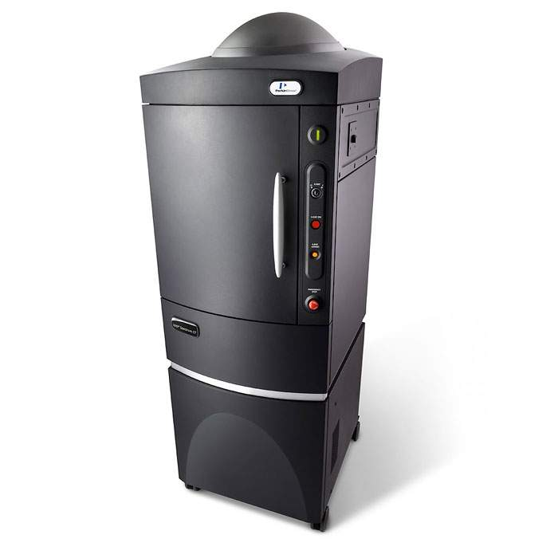
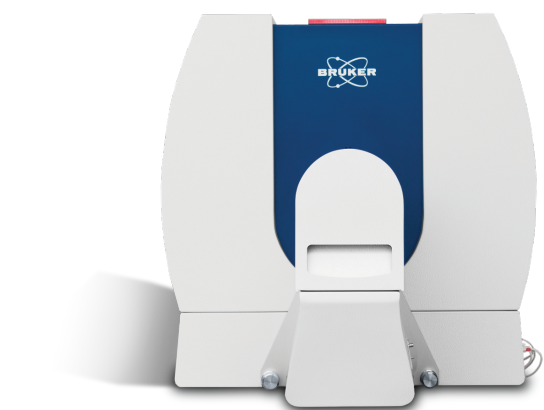

IVIS Spectrum CT 小动物活体成像系统活体 荧光 CT

介绍与联系方式
IVIS Spectrum CT 是来自美国的 PerkinElmer 公司的一款集光学和 microCT 成像于一体同时具备荧光和生物发光3D断层成像功能的小动物活体成像系统。
不过默认像素分辨率为 150μm，对于小鼠分辨率有些低，适合看大尺寸离体样本。
- 安装日期
- 2021年12月
- 设备厂商官方介绍页面
- IVIS Spectrum CT
联系方式：
- 共享平台网页链接
- 小动物活体三维成像系统（内网）
- 小动物活体三维成像系统（互联网）
- 联系人
- 夏林
- 联系电话：
- 023-68765465
- 地址：
- 西南医院科技中心 1楼 临床医学研究中心 1042
SkyScan 1276 高分辨率、快速活体台式 micro-CT活体 CT

介绍与联系方式
SkyScan 1276 是 Bruker Micro-CT 公司的一款活体型(in vivo)显微CT。
整只小鼠活体最高像素分辨率为 6.5μm，足够看小鼠骨头了。适合整只小鼠和小尺寸大鼠，当然也可以扫离体标本。
- 安装日期
- 2021年6月
- 设备厂商官方介绍页面
- SKYSCAN 1276
联系方式：
- 共享平台网页链接
- 不属于西南医院，请用学校的平台
- 联系电话：
- 023-68771420
- 地址：
- 大学药学楼10楼1004 活体影像实验室
临床前小动物活体成像设备 Super Nova PET/CT活体核素 PET/CT

注：此为官网第Ⅲ代图片，他们是买的Ⅰ代
介绍与联系方式
Super Nova® PET/CT 是 平生医疗科技 公司的一款小动物核素CT。
我不懂，自己看官网
- 安装日期
- 大约2019年
- 设备厂商官方介绍页面
- Super Nova PET/CT
联系方式：
- 共享平台网页链接
- 不属于西南医院，请用大坪医院的平台
- 联系人：
- 路老师
- 地址：
- 大坪医院 高血压内分泌科